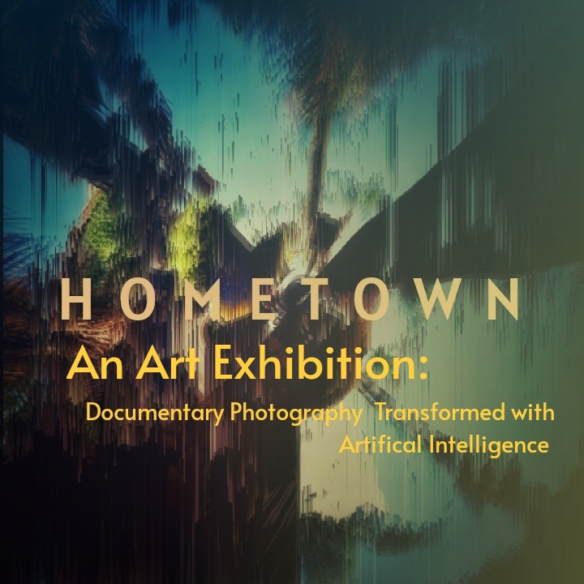

Projects
Current Projects
Project Pagoda

A full screenplay; a supernatural Japanese gothic horror story, is currently seeking representation.
Project Thea
An interactive storytelling experience that uses a character acted by an AI model. Have a look at the current codebase here.
Project Guardian
A Novella
Ongoing Projects
Project Community Outreach

The creation of this anchor website and associated social media presences.
Recently Completed Projects
Project Red One
A multimedia presentation via various online platforms that was made possible, in part, by a grant from United States Artists.
Future Projects
Project Hometown

A collection of documentary photographs taken in a suburban landscape alongside these same photos reworked via artificial intelligence.
Portfolio
An AI generated close-up of a typewriter on a desk. It has been desaturated to greyscale.
Writing
An AI generated close-up of a vintage VCR control panel. It has been desaturated and tinted to pinks and blues.
Video
An AI generated close-up of a fireworks stand with a sign that reads Firecracker Media. This image is inverted and has a red tinge to it.
AI
An AI generated close-up of a 35 mm film camera. This image is also tinted to red with a gradient overlay and seems to have some pixelated artifacts.
Photography